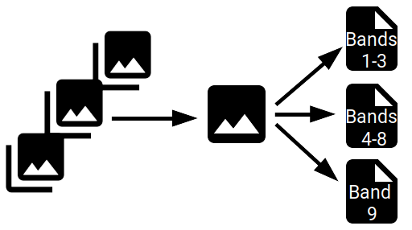

Concepts
This page describes the basic concepts and terms used by gdalcubes. Some of the definitions below may vary from other libraries.
Image collections
An image collection is simply a set of images where all images contain identical variables (bands). Images have a spatial footprint and a recording date/time. Values of the bands from one image may be stored in a single or in several files and bands may also differ in their spatial resolution. Two different images in a collection may have different map projections.
The figure below illustrates the basic structure: the image collection has 3 images, images each have a spatial extent, recording date/time, and a map projection and in this case 9 bands, where the band data come from three files per image. 
For example, Landsat imagery comes in a very simple format where one image consist of a set of GeoTIFF files with a one to one relationship between files and bands. MODIS data in contrast come as one HDF4 file per image that contains all bands.
In gdalcubes, anything that is readable by GDAL may contain actual band data of an image. Typically, this will be files,
but actually can be anything that the gdalinfo command understands, including
cloud storage, databases, and archive files (see below) through GDAL virtual file systems.
Examples for valid GDAL dataset references include /vsizip/archive.zip/xyz.tif (a GeoTIFF file in a .zip archive),
test.tif (a simple local GeoTIFF file), SENTINEL2_L1C:S2A_OPER_MTD_SAFL1C_PDMC_20150818T101440_R022_V20150813T102406_20150813T102406.xml:10m:EPSG_32632 (higher level GDAL Sentinel 2 datasets),
/vsicurl/https://download.osgeo.org/geotiff/samples/spot/chicago/UTM2GTIF.TIF (file on an HTTP server).
Instead of files we therefore often use the terms GDAL dataset reference or GDAL dataset descriptor.
Images, bands, and GDAL dataset references are indexed by gdalcubes in a single image collection file. This file is a simple SQLite database, which stores links to all GDAL dataset references and how they relate to images and bands. To allow fast filtering, the collection file additionally stores the spatial extent, the aquisition date/time, and the spatial reference system of images. Further imagary metadata is currently not included but future releases will do so, e.g. to filter images in a collection by cloud cover.
gdalcubes comes with a function to create an image collection from a set of GDAL dataset references as strings. This function however, must know some details about the structure of a specific EO data product:
- How to derive date/time from images?
- Which GDAL dataset references include data for specific bands / variables?
- Which GDAL dataset references belong to the same image?
These questions are answered as a set of regular expressions on the GDAL dataset references in an image collection format. Image collection formats are JSON descriptions of how the data is structured. gdalcubes comes with some predefined formats. An example format for Sentinel 2 level 1C data can is presented below.
{
"description" :
"Image collection format for Sentinel 2 Level 1C data as
downloaded from the Copernicus Open Access Hub, expects
a list of file paths as input. The format works on original
ZIP compressed as well as uncompressed imagery.",
"tags" : ["Sentinel", "Copernicus", "ESA", "TOA"],
"pattern" : ".+/IMG_DATA/.+\\.jp2",
"images" : {
"pattern" : ".*/(.+)\\.SAFE.*"
},
"datetime" : {
"pattern" : ".*MSIL1C_(.+?)_.*",
"format" : "%Y%m%dT%H%M%S"
},
"bands" : {
"B01" : { "nodata" : 0, "pattern" : ".+_B01\\.jp2"},
"B02" : { "nodata" : 0, "pattern" : ".+_B02\\.jp2"},
"B03" : { "nodata" : 0, "pattern" : ".+_B03\\.jp2"},
"B04" : { "nodata" : 0, "pattern" : ".+_B04\\.jp2"},
"B05" : { "nodata" : 0, "pattern" : ".+_B05\\.jp2"},
"B06" : { "nodata" : 0, "pattern" : ".+_B06\\.jp2"},
"B07" : { "nodata" : 0, "pattern" : ".+_B07\\.jp2"},
"B08" : { "nodata" : 0, "pattern" : ".+_B08\\.jp2"},
"B8A" : { "nodata" : 0, "pattern" : ".+_B8A\\.jp2"},
"B09" : { "nodata" : 0, "pattern" : ".+_B09\\.jp2"},
"B10" : { "nodata" : 0, "pattern" : ".+_B10\\.jp2"},
"B11" : { "nodata" : 0, "pattern" : ".+_B11\\.jp2"},
"B12" : { "nodata" : 0, "pattern" : ".+_B12\\.jp2"}
}
}
gdalcubes then automatically creates the image collection file from a set of input datasets and a collection format. A few predefined collection formats are included in the library (see https://github.com/appelmar/gdalcubes/tree/master/formats).
Data cubes
Data cubes are multidimensional arrays with dimensions band, datetime, y (latitude / northing), and x (longitude / easting). Cells of a cube all have the same size in space and time with regard to a defined spatial reference system. Data cubes are different from image collections. Image collections are irregular in time, may contain gaps, and do not have a globally valid projection.
To create data cubes from image collections, we define a data cube view (or simply view). Data cube views convert an image collection to a data cube by defining the basic shape of the cube, i.e. how we look at the data from an image collection. The data cube view includes
- the spatiotemporal extent,
- the spatial reference system / map projection,
- the spatiotemporal resolution either by number of or by the size of cells,
- a resampling algorithm used in
gdalwarp, and - an aggregation algorithm that combines values of several images if they are located in the same cell of the target cube
Views can be serialized as simple JSON object as in the example below. Note that there is no single correct view for a specific image collections. Instead, they are useful e.g. to run analysis an small subsets during model development before running on the full-resolution data.
{
"aggregation" : "min",
"resampling" : "bilinear",
"space" :
{
"left" : 22.9,
"right" : 23.1,
"top" : -18.9,
"bottom" : -19.1,
"proj" : "EPSG:4326",
"nx" : 500,
"ny" : 500
},
"time" :
{
"t0" : "2017-01-01",
"t1" : "2018-01-01",
"dt" : "P1M"
}
}
Data from images in a collection are read on-the-fly with regard to a specific data cube view. The target data cube is read chunk-wise, where chunk sizes in all directions can be defined by the user. The procedure to read data of one chunk is the following:
- Find all GDAL datasets of the collection that are located within the spatiotemporal extent of the chunk
- Iterate over all found datasets and do the following steps:
- Apply gdalwarp to crop, reproject / transform, and resample the current dataset according to the spatiotemporal extent of the current chunk and the data cube view.
- Store the result as an in-memory GDAL dataset.
- Copy the result to the in-memory chunk buffer (a four-dimensional array) at the correct temporal slice and the correct bands.
- If the chunk buffer already contains values at the target position, feed a pixel-wise aggregator (e.g. mean, median, min, max ) to combine pixel values from multiple images which are located at the same cell in the data cube.
- Finalize the pixel-wise aggregator if needed (e.g. divide pixel values by n for mean aggregation).
Internally, chunk buffers are arrays of type double. Image data is however read according to their orgininal data type. gdalwarp does the type conversion automatically, i.e. only the size of the chunk buffer in memory is larger but not the data that is transferred over the network for remotely stored imagery. If input images contain lower-resolution overviews, these are used automatically by gdalwarp depending on the target resolution of the cube.
Operations on data cubes
Currently, gdalcubes includes operations on data cubes to
- select bands,
- apply pixel wise arithmetic expressions,
- reduce data cubes over time,
- join identically shaped cubes, and
- stream chunks of data cubes to external software (such as R or Python).
Internally, all of the processes inherit from the same data cube type but take one or more existing data cubes as input arguments. Once data cube operation objects are created, only the shape of the result cube will be derived but no values will be calculated or read from input cubes. Data cube objects are primarily proxy objects and follow the concept of lazy evaluation. This also applies to chains of operations.
Data cube objects can be serialized as a simple JSON formatted directed acyclich graph. Below, a data cube operation chain that selects two bands of an image collection, computes differences between the bands, and finally computes the median differences over time is serialized as a graph. This graph can be used to recreate the same operation chain.
{
"cube_type": "reduce",
"in_cube": {
"band_names": [
"LST difference"
],
"cube_type": "apply_pixel",
"expr": [
"0.02*(LST_DAY-LST_NIGHT)"
],
"in_cube": {
"bands": [
"LST_DAY",
"LST_NIGHT"
],
"cube_type": "select_bands",
"in_cube": {
"chunk_size": [
16,
256,
256
],
"cube_type": "image_collection",
"file": "MOD11A2.db",
"view": {
"aggregation": "first",
"resampling": "near",
"space": {
"bottom": 4447802.0,
"left": -1703607.0,
"nx": 633,
"ny": 413,
"proj": "+proj=sinu +lon_0=0 +x_0=0 +y_0=0 +a=6371007.181 +b=6371007.181 +units=m +no_defs",
"right": 1703607.0,
"top": 6671703.0
},
"time": {
"dt": "P1M",
"t0": "2018-01",
"t1": "2018-12"
}
}
}
}
},
"reducer": "median"
}
Distributed data cube processing
The library comes with a server executable gdalcubes_server that listens on a given port for incoming HTTP requests to
a REST-like API.
This feature is still highly experimental. The general idea is that:
- Clients define a swarm of gdalcubes server instances that are used to evaluate a data cube operation.
- Processing of the result cube is then distributed to swarm members by chunks.
- The client shares its execution context, i.e. all files within the working directory by uploading files to all swarm members.
- GDAL dataset references in image collection files must be globally valid (i.e. accessible for all swarm members). Though this is a strong assumption, it should work well for cloud processing where imagery has global object identifers (such as S3 buckets).
Details of the exposed API can be found at https://appelmar.github.io/gdalcubes/server-api.html.